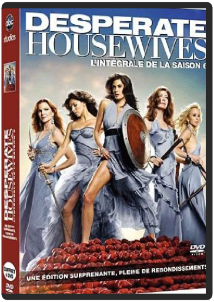
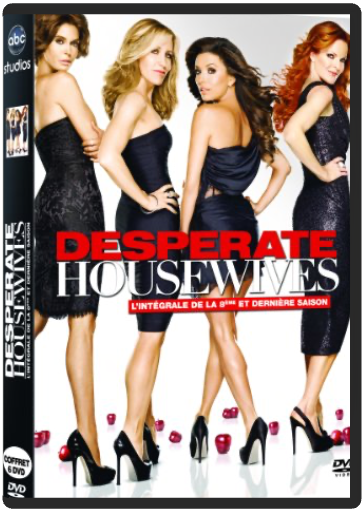
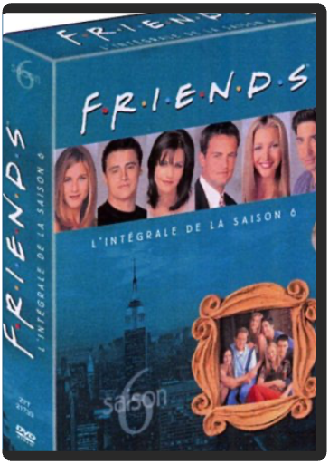

desperate housewives, saison 6  Wisteria Lane est un lieu paisible où les habitants semblent mener une vie heureuse... en apparence seulement ! Car en y regardant de plus près, on découvre bien vite, dans l'intimité de chacun, que le bonheur n'est pas toujours au rendez-vous. Et peu à peu, les secrets remontent inévitablement à la surface, risquant de faire voler en éclat le vernis lisse de leur tranquille existence...  desperate housewives, saison 7 desperate housewives, saison 7 Mary Alice Young adore observer ses amis et sa famille, elle n'y consacre pas sa vie...mais sa mort. En effet, un beau jour, dans sa coquette maison plantée au coeur d'un charmant quartier résidentiel, Mary Alice a décidé de mettre fin à ses jours. Désormais, de son point de vue imprenable, elle commente la vie de sa famille, de ses amis et de ses voisins. Aucun des petits secrets plus ou moins avouables de cette communauté apparemment sans histoire n'échappe désormais à Mary Alice. desperate housewives, saison 8 Mary Alice Young adore observer ses amis et sa famille, elle n'y consacre pas sa vie... mais sa mort. En effet, un beau jour, dans sa coquette maison plantée au coeur d'un charmant quartier résidentiel, Mary Alice a décidé de mettre fin à ses jours. Désormais, de son point de vue imprenable, elle commente la vie de sa famille, de ses amis et de ses voisins. Aucun des petits secrets plus ou moins avouables de cette communauté apparemment sans histoire n'échappe désormais à Mary Alice...  fais pas ci, fais pas ça, saison 4 fais pas ci, fais pas ça, saison 4 D'un côté les Bouley : un couple qui refuse le modèle autoritaire de leurs parents ils ont construit ensemble une famille recomposée. De l'autre côté, les Lepic, persuadés que les problèmes de la jeunesse actuelle sont essentiellement dus à la démission des parents, prônent un retour au mode d'éducation stricte qu'ils ont reçue et l'appliquent à leurs quatre enfants. Fais pas ci, Fais pas ça, une comédie inspirée de faits réels qui suit les aventures de deux familles incarnant deux méthodes d'éducation opposées. fais pas ci, fais pas ça, saison 5 D'un côté les Bouley : un couple qui refuse le modèle autoritaire de leurs parents ; ils ont construit ensemble une famille recomposée. De l'autre côté, les Lepic, persuadés que les problèmes de la jeunesse actuelle sont essentiellement dus à la démission des parents, prônent un retour au mode d'éducation stricte qu'ils ont reçue et l'appliquent à leurs quatre enfants. Fais pas ci, Fais pas ça, une comédie inspirée de faits réels qui suit les aventures de deux familles incarnant deux méthodes d'éducation opposées...  fais pas ci, fais pas ça, saison 6 fais pas ci, fais pas ça, saison 6 D'un côté les Bouley : un couple qui refuse le modèle autoritaire de leurs parents ; ils ont construit ensemble une famille recomposée. De l'autre côté, les Lepic, persuadés que les problèmes de la jeunesse actuelle sont essentiellement dus à la démission des parents, prônent un retour au mode d'éducation stricte qu'ils ont reçue et l'appliquent à leurs quatre enfants. Fais pas ci, Fais pas ça, une comédie inspirée de faits réels qui suit les aventures de deux familles incarnant deux méthodes d'éducation opposées... friends, saison 6 Imaginez que Phoebe devienne courtière en bourse, que Joey ait une liaison avec sa colocataire (Elle McPherson), que Ross couche avec la fille du nouveau flirt de Rachel (Bruce Willis) ou encore que Chandler prenne ses responsabilités en décidant de demander Monica en mariage ! Une saison où le passé refait surface, à l'image de Tom Sellek venu semer le trouble dans l'esprit de Monica ou encore du couple Ross/Rachel qui se réveillent mariés dès le premier épisode avec une sérieuse gueule de bois. Une saison où même le générique change puisque Courtney Cox a exigé de voir le nom de son mari (David Arquette) associé au sien. Ce caprice a été entendu par la production qui s'est empressée de s'exécuter… —Dale Cooper |


 Made with Delicious Library
Made with Delicious LibraryNancy, State zipflap congrotus delicious library Thomas, Julien